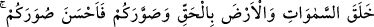
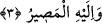

Yarın deyip durmak, yolun şartlarından değildir.
4- Hakk zikrinin galib olduğu kimseler: Bunlar vakti gözetmeyi bir yana bırakmışlar,
vakti takdir edenle meşguldürler.
Tefsirini yaptığımız âyet-i kerimede, Yüce Allah’ın nisbetlerden ve izâfelerden mutlak
olan hüviyetine işâret vardır. “Allah sizi yaratmıştır” demek sizin cinsiyetiniz,
şahsiyetiniz ve nev’iniz hakkında herhangi bir kayda bağlı kalmayarak sizi yaratmıştır.
“Sizlerden” yâni bu belirtilenler içinden bazıları kâfirdir, mutlak hakkı mukayyed halk
ile setrederler. Bunlar “tefrika”ya kaildirler. Çünkü kınayanın kınamasını savmak
isterler. Bu belirtilenler içinde mü’min vardır ki halk arasında hakkın zuhur ettiğine
inanır. Ve bu halkı hak ile setreder de “cem’iyet”e kail olur. Amacı hakikatleri
keşfedenlerle ünsiyet peyda etmektir. Yüce Allah kınayanın kınamasını savmak için hak
içinde hakkı, tâlib ve vâcid ile ünsiyet peyda etmek için, halkı hak ile setretme fiilinizi
görür.
3. Gökleri ve yeri yerli yerince yarattı. Sizi şekillendirdi ve sûretlerinizi de güzel
yaptı. Dönüş ancak O’nadır.
“Gökleri ve yeri yerli yerince” dini ve dünyevî maslahatları ihtivâ apaçık bir
hikmetle “yarattı.” Âyet-i kerimede yer alan “gökler” ile “yer”den maksad, yedi gök ve
yedi yerdir. Çünkü Kur’an’da bazı âyetlerde bu gerçek açıkça yer alır. Yüce Allah
şöyle buyurur: “birbiriyle ahenktar yedi göğü yaratmıştır” (el-Mülk, 67/3) Bir başka
âyet-i kerimede şöyle buyurulur: “Allah yedi kat göğü ve yerden bir o kadarını
yaratandır.” (et-Talak, 65/12)
“Yaratılış ve yapıları büyük olmasına rağmen bu gibi yerlerde Arş ve Kürsî’nin
zikredilmeyişinin sebebi acaba nedir?” diye bir soru akla gelecek olursa buna şöyle
cevap verilebilir: Arş ve Kürsî semadandır. Çünkü sema demek felek demektir. Felek,
şeffaf ve âlemi kuşatan bir cisimdir. Arş ve Kürsî kuşatıcı olarak feleklerin en genişidir.
Ancak eserleri zâhir ve gözle görülür değildir. Oysa gökler, yeryüzü ve bu ikisi
arasında bulunan yaratıklar böyle değildirler. Çünkü bunlar, mükellef olan muhataplara
daha yakındırlar. Ne durumda oldukları insanlarca bilinmektedir. Etki ve menfaatleri
gözle görülmektedir. Bu nedenle derler ki; güneş meyveleri olgunlaştırır, ay
renklendirir, yıldızlar tatlandırır. Bundan başka sayısız değişiklik bu cisimlerde daha
belirgindir. Bunlar Yüce Allah’ın kudret ve azametini daha belirgin biçimde gösterirler.
Yüce Allah şöyle buyurur: “O her an bir iştedir” (er-Rahman, 55/29)
Bu işlerin ekserisi göklerden ve yeryüzünden ibâret olan kâinat ve fesad âlemindedir.